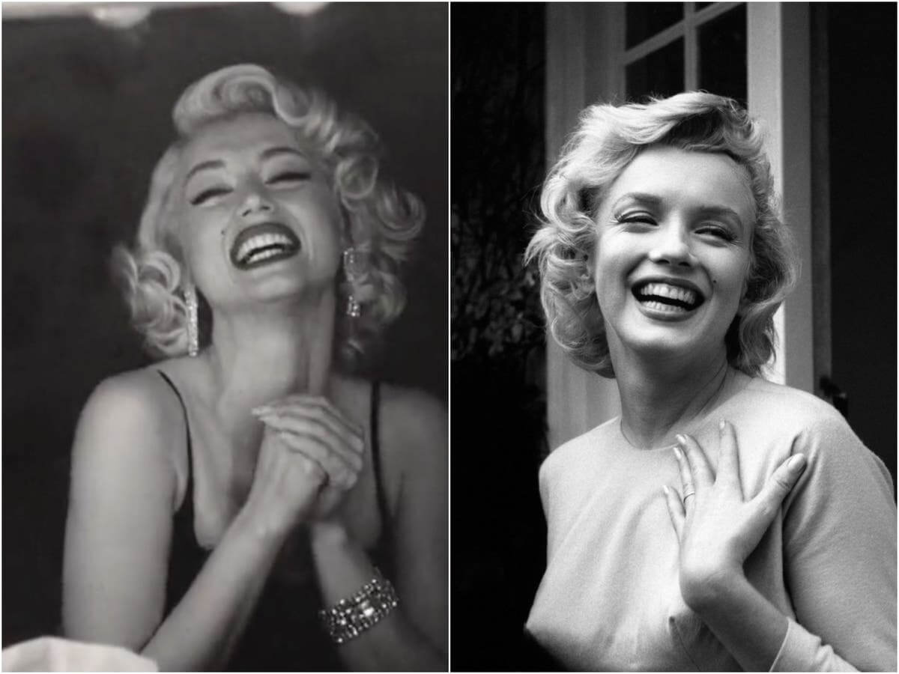
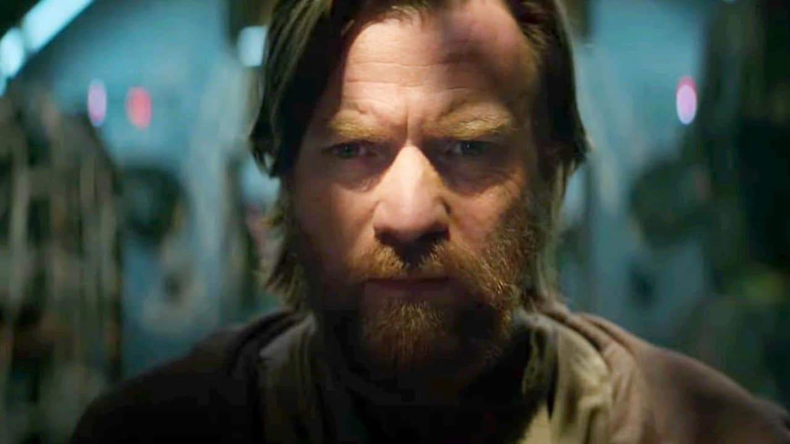
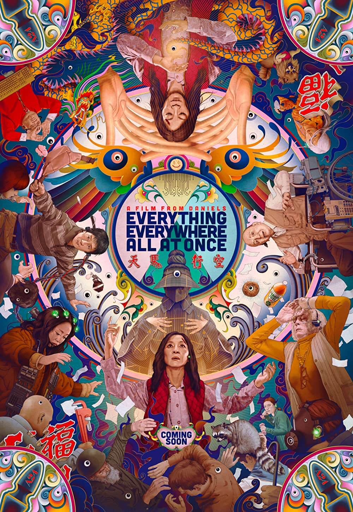
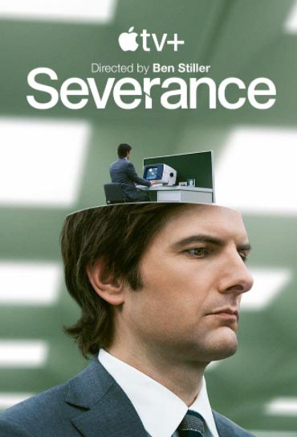

.png)
Movies & Series
For you who are a lover of the seventh art, and/or like to marathon series on your favorite streaming platform, here you can find all the news about the movies and series of the moment! News, analysis, theories, reviews and more.
Top News -->
Ana de Armas cries and smiles like Marilyn Monroe in the 1st teaser for Blonde
Ana de Armas appears crying profusely and praying that a mysterious woman does not abandon her in the first teaser of Blonde, Andrew Dominik's biopic (The Assassination of Jesse James) about Marilyn Monroe. In the preview of the Netflix production, after scenes of the actress recreating great moments in Monroe's career, we understand that the woman she turns to is herself; her public persona, treated as an entity to be channeled.
.jpg)
The Boys | Karl Urban, Antony Starr and more have come to Brazil confirmed
Prime Video confirmed which names from the cast of The Boys will come to Brazil to promote the bombastic season finale of the third season of the series, scheduled to air on July 8. Antony Starr (Homeland Captain), Claudia Doumit (Victoria Neuman), Jack Quaid (Hughie), Jensen Ackles (Soldier Boy), Karen Fukuhara (Kimiko), Karl Urban (Billy Bruto) and Nathan Mitchel (Black Noir) will be chosen.
Obi-Wan Kenobi proves the mediocrity of Star Wars in Disney times
If there is one point of agreement between myself and the writing team of Obi-Wan Kenobi (headed by Joby Harold, but also composed of Hossein Amini, Stuart Beattie, Hannah Friedman and Andrew Stanton), it is that the miniseries was born, by definition, like a hostage from Star Wars.
Last Reviews -->
.jpeg)
Minions 2 The Rise of Gru
Everything Everywhere All at Once
.jpg)
Lightyear
.jpg)
Stranger Things s04
.jpg)
Umbrella Academy s03
Severance s01
Last News -->
.png)
Barbie reveals Ryan Gosling's tanned look as Ken doll
The long-awaited and starring live-action Barbie movie starring Margot Robbie (The Suicide Squad) has finally revealed Ryan Gosling's look as the human version of the Ken doll — the doll's traditional love interest.
.jpg)
Joe Turkel, from The Shining and Blade Runner, dies at 94
Joe Turkel, best known for The Shining and Blade Runner, died last Thursday (27), aged 94. The actor was admitted to a hospital in Santa Monica, California, in the United States. However, the cause of death was not revealed.
.jpg)
Joker 2 | Lady Gaga in talks to play Harley Quinn; sequence will be musical
Lady Gaga may star in Joker 2: Folie a Deux alongside Joaquin Phoenix. According to The Hollywood Reporter, the A Star Is Born and House Gucci singer and actress is in initial negotiations to play Harley Quinn in the sequel to the 2019 film.